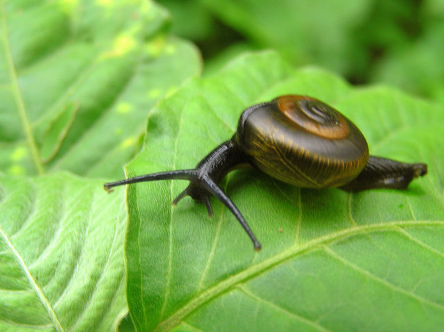

- The heart of a shrimp is located in its head.
- A snail can sleep for three years.
- The fingerprints of a koala are so indistinguishable from humans that they have on occasion been confused at a crime scene.
- Slugs have four noses.
- Elephants are the only animal that can't jump.
- A rhinoceros's horn is made of hair.
- Nearly three percent of the ice in Antarctic glaciers is penguin urine.
- Bats always turn left when leaving a cave.
- Giraffes have no vocal chords.
- An ostrich's eye is bigger than its brain.

